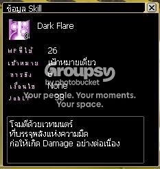
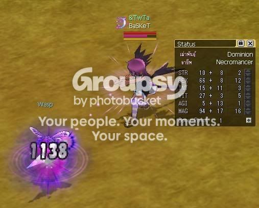

BaSKeT เขียน:วันนี้จะมากล่าวถึงสกิล Dark Flare กันจ้า
เห็นว่ามีคนตัดสินใจอัพไม่อัพ
เพราะเลือกระหว่างสกิลนี้กับ สกิลจ็อป 47 ของ คาบาจ้า

ลองเปรียบเทียบสกิลกันนะคะ
อย่างแรก ลอง เคออส วิโดว์เลเวล 3 กันจ้า

ตามเสตตัสข้างต้น ใช้เวลาแคสติ้ง1.5วิ ดาเมจที่ได้ 1138
อย่างที่สอง ดาร์ค แฟลร์ เลเวล 3

ใช้เวลาแคสติ้ง 3 วิ ดาเมจที่ได้ 740
สุดท้าย ลองเทียบกับสกิล ชาโดว์ บลาส เลเวล 3

แคสติ้ง 2 วิ ดาเมจที่ได้ 1150(สั่งเคเอฟซี - -a)
สกิล ดาร์ค แฟลร์ ดาเมจที่จะได้นี่ไม่ต้องหวังเลยค่ะ
เพราะ ดาเมจมันห่วย (เบากว่าเคออส วิโดว์อีก ดีไม่ดีอาจจะเบากว่าแบล๊ค วิโดว์)
ส่วนดาเมจต่อเนื่องที่กล่าวคือ เมื่อใช้สกิลมอนสเตอร์จะติดสถานะ เป็นรูปสายฟ้า
ซึ่งจะทำดาเมจเรื่อยๆ เหมือนติดพิษ(ดาเมจเรื่อยๆนี่น้อยนะคะ แต่แรงกว่าพิษนิดๆ)
สรุป ว่า สกิลดาร์ค แฟลร์ นี่เน้น ก่อกวน ในNvN เพราะถ้าผู้เล่นโดนสถานะผิดปกติเข้าไป
นี่ไม่ต้องสืบจ้า เหมาะสำหรับยิงเปิดด้วย เพราะมอนจะเลือดลดเรื่อยๆจ้า
แต่ว่าถ้าเน้นดาเมจ ควรจะกลับไปเอา ดาร์ค บลาสเซอร์เอานะจ๊ะ